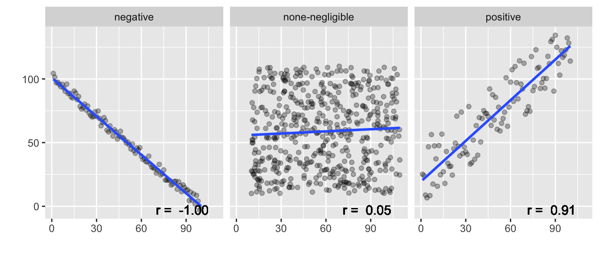
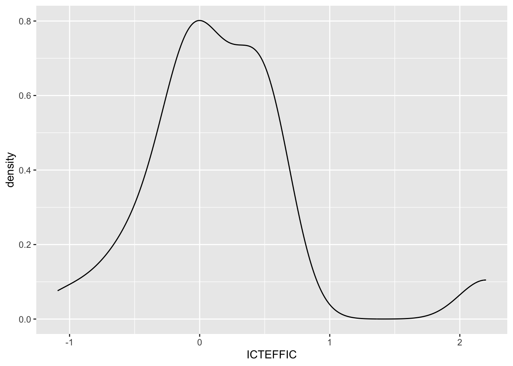
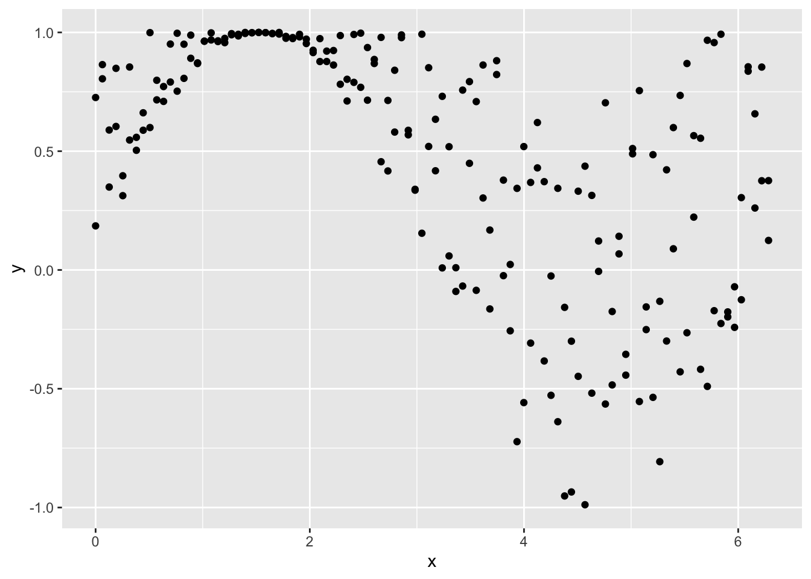
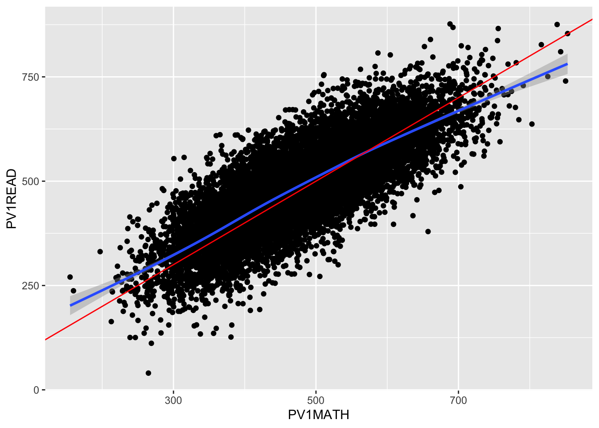

In this session we will be exploring the use of linear regression to describe data and predict results. We will be looking for patterns within the PISA data sets, as well we trying to recreate some of the controversial findings from Stoet and Geary (2018) by linking PISA_2018 data to global gender equality indices using the left_join function.
There are two types of statistics that we can create:
Descriptive statistics describe/summarise a data set. E.g. what’s the average height of a woman, how many people called George were born in Somerset each year since 1921?
Inferential statistics estimate something from a set of data, make generalisations about larger populations. E.g. If I know the height of a woman, can I predict her shoe size? If I meet someone called George, what is the likelihood that they were born in Somerset?
The first few sessions of this course taught you how to use R to perform descriptive statistics, with you finding the mean, max, min etc of data. Following sessions have given you a range of inferential tools, for example chi-square, t-tests and ANOVA. This session will introduce you to linear regression a means by which you can predict the value of a variable based on the value of another variable. Before we can start using linear regression we will introduce you to correlation, another type of inferential statistics.
3 Correlation
Correlation gives the direction and strength of the relationship between two numeric variables. For example we might see a relationship between the reading level of a student and their maths results in the UK: the better a student is at reading, typically, the higher their maths grade. Correlation allows us to describe this relation statistically:
The graph above shows that there is a correlation between Maths score and Reading score. This relationship is a positive one, i.e. as the reading level of an individual increases the maths grade is also likely to increase. The strength, correlation coefficient (Pearson's r) of the relationship between these two numeric fields is 0.7974. The correlation coefficient runs from -1 to +1.
If the correlation coefficient (r) is negative, i.e. as one factor increase the other declines, the slope of the line of best-fit will be negative. E.g “The more time you spend running on a treadmill, the more calories you will burn”
If the correlation coefficient (r) is positive, i.e. as one factor increase the other increases, the slope of the line of best-fit will be positive. E.g. “As the temperature decreases, more heaters are purchased.”
If the correlation coefficient (r) is 0, i.e one factor increasing doesn’t impact the other factor, the slope of the line of best-fit will be flat. E.g. “the number of trees in a city has no relation to the number of chocolate bars purchased by children”

To run the correlation test in R we use the cor.test function:
Pearson's product-moment correlation
data: corr_data$PV1MATH and corr_data$PV1READ
t = 150.47, df = 12970, p-value < 2.2e-16
alternative hypothesis: true correlation is not equal to 0
95 percent confidence interval:
0.7909995 0.8035376
sample estimates:
cor
0.7973546
df the number of ways that the data can vary, the larger this number the more ways the data could have been different
p-value significance of the result, can we dismiss the null-hypothesis that there isn’t a relationship between maths score and wealth as the p-value is less than 0.05
sample estimates the strength of the relationship between the factors
confidence intervals the upper and lower limit of where the correlation coefficient is likely to lie, with 95% confidence.
Note
Degrees of freedom (df)
Two individuals from different countries might have a weight difference of 5 kg. So what?! But if average weights between whole populations of countries vary by 5 kg then this becomes much more interesting.
Roughly: The number of independent values that can vary without questioning the significance of the model. So the more df you have, the safer your model. Degrees of freedom can be calculated by looking at the number of values that can vary, often this is the number of observations that you have minus one – if you had just one element it wouldn’t be able to vary against anything else.
3.1 Other correlation-coefficients
When looking for correlations in data that is non-parametric, i.e. not normally distributed you could use Spearman’s rank order correlation-coefficient (rho ρ) rather than Pearson’s r. cor.test(... method = "...") allows you to specify the method used for correlation, you can set this to Spearman’s rho by writing method = "spearman"
Data will need to contain continuous or ordinal variables. The Spearman correlation coefficient is based on the ranked values for each variable rather than the raw data. The Spearman correlation between two variables is equal to the Pearson correlation between the rank values of those two variables.
We want to look at the correlation between students self-efficacy in digital competencies (ICTEFFIC) and wealth (HOMEPOS) for students in the the UK. To make the data set manageable, let us examine girls whose mother or father is a software developer
# create a data set for the UK, including the HOMEPOS and ICTEFFIC variablessub_data <- PISA_2022 %>%select(CNT, HOMEPOS, ICTEFFIC, ST004D01T, OCOD1, OCOD2) %>%filter(CNT =="United Kingdom") %>%filter(ST004D01T =="Female") %>%filter(OCOD1 =="Software developers"| OCOD2 =="Software developers")
It is unclear if ICTEFFIC, self-efficacy in digital competencies, is normalised. We can graph it with geom_density to find out:
ggplot(sub_data) +geom_density(aes(x=ICTEFFIC))

The data doesn’t look very normal.
We can run the Shapiro-Wilk Test to check for the the normality of the data, any alpha value greater than 0.05 means we can assume that the data is normally distributed.
shapiro.test(sub_data$ICTEFFIC)
Shapiro-Wilk normality test
data: sub_data$ICTEFFIC
W = 0.85272, p-value = 0.0001823
In this case the data isn’t normally distributed as p < 0.05 and we need to use a non-parametric correlation test. We need to run Spearman rather than Pearson:
Spearman's rank correlation rho
data: sub_data$HOMEPOS and sub_data$ICTEFFIC
S = 9301.1, p-value = 0.5459
alternative hypothesis: true rho is not equal to 0
sample estimates:
rho
-0.1025489
The result shows no significant correlation (p=0.5459) between wealth and IT self-efficacy for girls who home at least one parent who is a software developer
3.2 Checking the assumptions of the model
For you to conduct the correct correlation test you need to be sure that the data meet several criteria. First, as noted above, the data should be normally distributed for a pearson test to be conducted. You can check the normality of the data using the shapiro.test function and/or by graphing the data. For large data sets such as PISA (n > 5,000), the shapiro.test won’t work and you might want to use the graph to check; alternatively you can also use the central limit theorem, which means that when you have a sufficiently large sample you can presume that the data is normally distributed (Field, Miles, and Field 2012). As a rule of thumb “30 is the magic number”, and any samples you are studying with 30 or more data items can be treated as parametric, e.g. you could use pearson when running correlation analysis on 30 or more items. This is a rough rule of thumb and you should always check the normality of your data before when checking and presenting any result any tests.
You also need to expect a linear relationship between the two variables. For example, if you were to plot the data and it looked like a curve, you might want to use a different test. You can use the ggplot function to plot the data and see if it looks linear. The graph below shows data that doesn’t appear to be linearly related.

The data should be of paired observations. If you have missing data in one of the variables you should remove the missing data from the other variable using na.omit() e.g.:
How does the correlation of wealth HOMEPOS of females ST004D01T and their Reading PV1READ scores compare to males? Why might they be different?
answer
data <- PISA_2022 %>%filter(ST004D01T =="Female")cor.test(data$HOMEPOS, data$PV1READ, method ="pearson")#> 0.4972371 data <- PISA_2022 %>%filter(ST004D01T =="Male")cor.test(data$HOMEPOS, data$PV1READ, method ="pearson")#> cor 0.4216684
How does life satisfaction ST016Q01NA correlate with the science score of students?
answer
cor.test(PISA_2022$ST016Q01NA, PISA_2022$PV1SCIE, method ="pearson")#> -0.06439345#> there is negligible or no correlation between these variables
How does parental involvement in education PARINVOL correlate with reading outcomes for students in Germany (HINT: you might want to check the normality of this data!):
answer
mdl_data <- PISA_2022 %>%mutate(gender = ST004D01T) %>%filter(!is.na(PARINVOL), CNT =="Germany") %>%select(CNT, gender, PARINVOL, PV1READ)shapiro.test(mdl_data$PARINVOL)#> not normally distributed!#> W = 0.96017, p-value < 2.2e-16ggplot(mdl_data) +geom_density(aes(x=PARINVOL))shapiro.test(mdl_data$PV1READ)#> not normally distributed!#W = 0.99362, p-value = 4.224e-08ggplot(mdl_data) +geom_density(aes(x=PV1READ))#> as the data isn't normally distributed we need to use a non-parametric test, i.e. spearman's rhocor.test(mdl_data$PARINVOL, mdl_data$PV1READ, method ="spearman")#> p-value < 2.2e-16#> rho -0.2962208# or as a graphggplot(mdl_data, aes(x=PARINVOL, y=PV1READ)) +geom_point() +geom_smooth(method="lm")
Using the fullPISA data set, for the United Kingdom How does the sense of belonging to school BELONG correlate with the item that measures bullying BULLIED? How does the UK compare against other countries?
answer
data <- PISA_2022 %>%filter(CNT =="United Kingdom")cor.test(data$BELONG, data$BULLIED, method ="pearson")#> -0.3797393#> there is a moderate negative correlation between these variables,#> students who are bullied less have a greater sense of belonging
Tip
If you want to find all the numeric fields, i.e. the fields that you can easily run correlation calculations on, use the following code to list them:
Correlation allows us to see the strength of the relationship but it doesn’t allow us to predict what would happen if a variable changed. “When the wind blows, the trees move. When the trees move, the wind blows.” Which is it? Correlation suggests there is a link but tells us nothing about causation. To do this we need regression.
differences and similarities between correlation and regression
Correlation
Regression
an example of inferential statistics
an example of inferential statistics
give direction and strength of the relationship between two (or more) numeric variables
give direction and strength of the relationship between two (or more) variables
Relationship between variables
The extent to which one variable predicts another
Effect only (no cause)
Cause and effect
p(x,y) == p(y,x)
One way (e.g. education affects income differently from how income affects education)
Single point/value
An equation that creates a best fitting line
Regression is a way of predicting the value of one dependent variable from one or more independent variables by creating a hypothetical model of the relationship between them.
independent variable(s) - the cause of the change that is independent of other variables
dependent variable - the effect of the cause
For example we could have a model that predicts the value of a house - the dependent variable - based on the number of bedrooms, the size of the garden, and the distance from the city centre - the independent variables.
For regression to work we need to have a large enough sample size, the means to explain any relationships, and relationships that are not spurious, i.e. that it is not due to third variables. For example….
4.1 Linear models and regression
The model used is a linear one, therefore, we describe the relationship using the equation of a straight line. In linear regression, with one dependent and one independent variable, we use the Method of Least Squares to find the line of best fit. The means finding a straight line that passes as close as possible to all the points. The distance between a point and this line is called a residual. The line of best fit is the line where the sum of the residuals squared is the smallest number possible.
Method of Least Squares
The line that is created can be described by the equation:
Output = Intercept + Coefficient * Input
Let’s use linear regression to explore the relationship between the score in maths(PV1MATH) and the score in reading (PV1READ). To build this model we use the lm command:
The first part defines the model we are going to explore, listing the dependent variable and separating it from the independent variable[s] with a tilde ~. You can specify multiple independent variables by adding more plusses, but for the example here we are only going to use one. Once the model has been built we can feed it into the summary(<mdl>) command to output the results:
Call:
lm(formula = PV1MATH ~ PV1READ, data = PISA_2022)
Residuals:
Min 1Q Median 3Q Max
-273.61 -38.33 -2.48 36.01 323.51
Coefficients:
Estimate Std. Error t value Pr(>|t|)
(Intercept) 1.021e+02 2.981e-01 342.5 <2e-16 ***
PV1READ 7.731e-01 6.599e-04 1171.5 <2e-16 ***
---
Signif. codes: 0 '***' 0.001 '**' 0.01 '*' 0.05 '.' 0.1 ' ' 1
Residual standard error: 56.61 on 613742 degrees of freedom
Multiple R-squared: 0.691, Adjusted R-squared: 0.691
F-statistic: 1.372e+06 on 1 and 613742 DF, p-value: < 2.2e-16
If you look at the Coefficents: table we can see that PV1READ is significant in explaining the outcome of the model as the p-value Pr(>|t|) is less than 0.001 <2e-16 ***. The null hypothesis is that one variable does not predict another, we can dismiss this. By looking at the Estimate we can also see by how much a PV1MATH grade would increase if the PV1READ increased by one: 0.7731. Additionally, we have R2 value of 0.691, this suggests that the model is very good at explaining the value of the dependent variable, 69.1% of the variance in the PV1MATH grade is explained by the PV1READ grade.
4.2 R squared
With large data sets you will often find a statistically significant difference, but p-values should be read with caution as the larger the data set you use the more likely you are to get a low p-value. The actual magnitude of a significant difference might be very small. r-squared and adjusted r-squared are ways for you to report on the magnitude of a significant difference and when you report the findings from a linear model you should be looking at the p and the R^2^ values. You have already met R, this is the correlation coefficient from earlier, R2 is this value squared:
R - The correlation between the observed values of the outcome, and the values predicted by the model.
R2 - The proportion of variance in the dependent variable accounted for by the model.
Adj. R2 - An estimate of R2 in the population (shrinkage), often very similar to plain R2.
Imagine we take two experiments a) and b)
(a) larger effect-size; (b) smaller effect-size from Coe (2002)
Both have statistically significant results, but it’s clear that the impact of the intervention in graph a) is larger as there is less overlap between the curves, i.e. there is more difference between the the outcomes.
if the difference were as in graph (a) it would be very significant; in graph (b), on the other hand, the difference might hardly be noticeable (Coe 2002, p2)
Different effect sizes have different meanings and there is some debate on how to interpret them, with different interpretations for different fields of research (Schäfer and Schwarz 2019)
However, acceptable effect sizes in social sciences - including education - are often very low. You might be familiar with the Education Endowment Foundation’s Teaching and Learning Toolkit which outlines the Impact of different interventions on student learning. For example, repeating a year is seen to decrease student progress by 3 months and providing students with feedback is seen to increase student progress by 6 months. Behind the scenes they are using effect-sizes to predict the impact of educational interventions. In their model an effect-size of 0.1 is considered to have “Low impact”, but also an effect size of this magnitude is translated to 2 months progress in the Toolkit (Higgins et al. 2016, 5).
4.3 Questions: Regression
Run a regression model to look at how wealth HOMEPOS influences Maths grades in Kazakhstan What is the impact of increasing the wealth of students by one unit? How does this model compare against the same model for science and reading scores?
Run a regression model to look at how science grades predict Maths outcomes in UK students. How does this compare to students in France?
answer
mdl <-lm(PV1MATH ~ PV1SCIE, data=PISA_2022 %>%filter(CNT=="United Kingdom"))summary(mdl)#> Estimate = 0.80789#> p<0.001#> R2 = 0.7533mdl <-lm(PV1MATH ~ PV1SCIE, data=PISA_2022 %>%filter(CNT=="France"))summary(mdl)#> Estimate = 0.793547#> p<0.001#> R2 = 0.8012#> both models are significant, but the model in France has a higher R squared #> value, i.e. Science is a better at explaining the variance in maths outcomes #> in France than it is in the UK.
Create a linear model to look at parental involvement PARINVOL influences Maths grades for female students in Germany and Hong Kong (China). If we use the Education Endowment Foundation’s interpretation of effect sizes (Higgins et al. 2016, 4) what is the impact of increasing parental involvement on student grades in each country?
answer
mdl <-lm(PV1MATH ~ PARINVOL, data=PISA_2022 %>%filter(ST004D01T=="Female", CNT=="Germany"))summary(mdl)#> Estimate = -41.864#> p<0.001#> R2 = 0.1289#> this is just above 0.1, meaning the model has a "Low impact" effect size #> if we use the Education Endowment Foundation's interpretation of effect sizes#> However, increased parental involvement decreases Maths scores!?mdl <-lm(PV1MATH ~ PARINVOL, data=PISA_2022 %>%filter(ST004D01T=="Female", CNT=="Hong Kong (China)"))summary(mdl)#> Estimate = -4.614#> p<0.001#> R2 = 0.001756#> Parental involvement has a negligible effect on Maths scores in Hong Kong
Is it reasonable to presume that using 5 interventions from the education endowment foundation toolkit, each with effect-sizes of 0.1, i.e. 2 months improvement, will increase the progress for the average student in your class by 10 months (5 * 2)?
answer
#> Probably not! The effect of the interventions might not be additive, and the #> effect of the interventions might not be the same for all students.
5 Multivariable linear regression
So far we have looked at the impact of a single independent variable on a single dependent variable. We are now going to look at building models that contain multiple independent variables, of both continuous and discrete values. For example, we might want to see how Gender (ST004D01T) and Reading score (PV1READ) help predict a maths score. To add extra independent variables, use the plus symbol +:
Call:
lm(formula = PV1MATH ~ PV1READ + gender, data = PISA_2022 %>%
rename(gender = ST004D01T))
Residuals:
Min 1Q Median 3Q Max
-289.474 -37.253 -2.099 35.295 309.126
Coefficients:
Estimate Std. Error t value Pr(>|t|)
(Intercept) 8.363e+01 3.086e-01 271.0 <2e-16 ***
PV1READ 7.863e-01 6.478e-04 1213.8 <2e-16 ***
genderMale 2.528e+01 1.419e-01 178.2 <2e-16 ***
---
Signif. codes: 0 '***' 0.001 '**' 0.01 '*' 0.05 '.' 0.1 ' ' 1
Residual standard error: 55.2 on 613662 degrees of freedom
(79 observations deleted due to missingness)
Multiple R-squared: 0.7062, Adjusted R-squared: 0.7062
F-statistic: 7.375e+05 on 2 and 613662 DF, p-value: < 2.2e-16
Both independent variables are significant (p<0.001), and the R2 of the model is high at 0.7062, this model explains 71% of the variance in Maths grade. Looking at the Estimates, we see both independent variables presented, this means we can read them as if the other factor has been controlled for; e.g. what is the impact of reading score if the impact of gender has been taken into consideration. PV1READ is 0.786, meaning for an increase of 1 in this score, the PV1MATH grade would increase by 0.786. Gender is different, this is a nominal field, being either Male or Female, and genderMale is shown in the coefficients table. This means that the model has taken gender == Female as the base state, and modeled what happens if the gender were to change to Male. Interestingly, it suggests that when controlling for the reading grade, e.g. comparing females and males of the same reading score, males would do 25.28 points better in their PV1MATH grade than females(!). We’ll be exploring these gender differences a little further in section Section 8.2.
Tip
Picking variables for your regression model can be difficult. You might have a large number of potential predictors and you might not know which ones to include. Some predictors might also be correlated with each other, and this can cause problems in your model. For example, if you were to include the number of cars in a student’s household and the income of the family, these two variables might be highly correlated, as it seems likely richer families will have more cars. This is known as multicollinearity and can cause problems in your model, such as lower p values and larger standard errors.
There are a few methods to help you decide which variables to include in your model:
A rule of thumb is you need try to use predictors that you think make sense in explaining your model, variables that have some theoretical rationale behind their inclusion. You don’t want to have a wonderful model that when you come to write-up, you can’t explain; plus variables that make sense stand a good chance of being good predictors. For example, if you are trying to predict a student’s Mathematics score, you might want to include the student’s reading grade, along with their gender and their socio-economic status. You can find literature on all of these variables and could happily explain why you think they might be good predictors.
Next you can use stepwise selection to help you decide which variables to include in your model, by either starting with no variables and keep adding them to get the highest explanatory power of the model, or start with all the variables and remove them one by one until you get a model with the highest explanatory power (roughly the highest adj.R2). The MASS package comes with code to run the AIC (Akaike Information Criterion) stepwise process to help you do this. AIC is a measure of how well your model fits the data, but it also includes a penalty for the number of variables you use. This means that AIC will help you find the best model that uses the fewest variables. To use the AIC process, create a data frame with all the variables that you want to use and use na.omit to make sure that you have complete rows of data (warning, the more variables you use the slower this process will be):
Then use the AIC (Akaike Information Criterion) function to find the best model, to do this. Create a linear model using lm, with the model description PV1MATH ~ ., where . stands for everything, i.e. every other column in the mdl_data data frame. We then pass the lm() result to stepAIC to find the best model.
library(MASS)mdl <-lm(PV1MATH ~ ., data = mdl_data)stepAIC(mdl, trace =TRUE, direction="both")
Call: lm(formula = PV1MATH ~ PV1READ + PV1SCIE + ST004D01T + ESCS + HOMEPOS + OECD + ST253Q01JA + ICTEFFIC + STUBMI, data = mdl_data) In this case Parent Attitudes Toward Mathematics (WLE)PQMIMP and Parental Involvement (WLE)PARINVOL were not seen to be contributing enough to the model to be included(?!).
5.1 Checking the assumptions of the model
Like the other statistical models you have met so far, linear regression has a number of assumptions that need to be met for the model to be valid. These are:
Independence: The residuals should be independent of each other, i.e. the residuals from one observation should not predict the residuals from another observation, there shouldn’t be patterns in the residuals. We can test the independence of the residuals using the Durbin Watson test from the car package. Where p-values of < 0.05 indicate that the residuals are not independent.
lag Autocorrelation D-W Statistic p-value
1 0.002082558 1.995719 0.786
Alternative hypothesis: rho != 0
In this test, we can see that the p-value is > 0.05 meaning we can assume that the residuals are independent.
No multicollinearity: The independent variables should not be correlated with each other, e.g. having PV1MATH and PV1SCIE in a model, which are highly correlated, might make it difficult to work out which of the scores is having the impact. You might be able to alleviate this issue by creating a composite variable: composite_score = (PV1MATH + PV1SCIE) / 2 and using this in your model instead. Field, Miles, and Field (2012) suggest that if the correlation between two variables is “above 0.80 or 0.90” (p.276), then you might have a problem with multicollinearity, the actual correlation between these two fields is 0.89. More advanced checks can use the vif() function from the car package to check for multicollinearity. This function will calculate the Variance Inflation Factor (VIF) for each variable in the model. A VIF of 1 means that the variable is not correlated with any other variables, and a VIF of 5 or more means that the variable is highly correlated with other variables.(ibid. p293)
library(car)mdl <-lm(PV1READ ~ PV1MATH + PV1SCIE + ST004D01T, data = PISA_2022 %>%filter(CNT =="United Kingdom"))# They are close to 5, consider removing one of the PV1 variables or combining themvif(mdl)
Normality: The residuals should be normally distributed. To check this we can use Q-Q plots. The Shapiro-Wilk test is also used for smaller data sets where there are n < 5000 observations.
There is some deviation from the red line in the Q-Q Residuals plot, but the residuals are close to the line within the x-axis [-2,2] range and we can assume the data is normally distributed with some confidence.
Homoscedasticity: The residuals (the difference between the observed and predicted values) should be equal across all values of the independent variables. This means that the variance of the residuals should be constant. You can use ols_plot_resid_fit from the olsrr package to check for the normality and homoscedasticity of the model. The data points should be spread randomly, with no funneling from one end to another:
These plots looks good for a random distribution of residuals, but we can add to our analysis by using the Breusch-Pagan test - ols_test_breusch_pagan() in the olsrr package:
Breusch Pagan Test for Heteroskedasticity
-----------------------------------------
Ho: the variance is constant
Ha: the variance is not constant
Data
-----------------------------------
Response : PV1READ
Variables: fitted values of PV1READ
Test Summary
-------------------------------
DF = 1
Chi2 = 47.53604
Prob > Chi2 = 5.400197e-12
The result here of p<0.05 suggests that there is a degree of heteroscedasticity in the model, for example, we might find that students with high reading scores do relatively badly at maths, when compared to those with lower reading scores, this looks marginally true:

However, the Breusch-Pagan test does appear to be at odds with the graphs above and it is the case that with large data sets (PISA is huge) many of these model significance tests can overstate the issue, i.e. they report significance when the actual actual effect on the model is very small. A good way of thinking about this is the story of The Princess and the Pea, however many mattresses were placed underneath the princess, she could still feel the pea at the bottom of the pile of mattresses. For everyone else the pea wasn’t important at all, when they saw how many mattresses there were ((https://stats.stackexchange.com/users/247274/dave), n.d.). The mattresses are our data samples, and the princess is our Breusch-Pagan test complaining about something that actually isn’t that important given the large data set we are using. The graphs look fine and we can assume that homoscedasticity is not a problem in our model. Good graphs can often overrule the output of model tests if the data set is large enough (Schmidt and Finan 2018).
Not meeting all of the assumptions needed for linear models doesn’t mean we can’t report the linear model results, but we should make note of the assumptions that we have checked and the results of these checks to help readers better understand the limitations of the analysis and the robustness of the results. Additionally, we might want to:
log-transform the outcome variable if you think the relationship might be logarithmic, or apply square root or cube root transforms
combine the two PV score predictors into one to avoid the potential multi-collinearity,
focus on particular countries rather than the whole data set, or
split our data so we only look at high, medium or low performing students only.
Other types of regression, such as multilevel models might be able to help you get past these issues as it will allow you to run multiple models on different subsets of the data.
Tip
To find out more about the assumptions when using linear models, please see Field, Miles, and Field (2012) and a great book by the University of Wisconsin
You might also want to utilise the easystats package which will help you check the assumptions of your model using the check_model() command
When reporting linear regression we should make note of the estimate (also known as beta β-value) of each factor along with their p-values. We need to know the R2 and p-value for the model as well as the F-statistic and the degrees of freedom. We can then construct a few sentences to explain our findings (Zach 2021):
Simple linear regression was used to test if [predictor variable] significantly predicted [response variable]. The overall regression was statistically significant (R2 = [R2 value], F(df regression, df residual) = [F-value], p = [p-value]). It was found that [predictor variable] significantly predicted [response variable] (β = [β-value], p = [p-value]).
For the example above, this would be:
Simple linear regression was used to test if a student reading grade significantly predicted student maths grade. The overall regression was statistically significant (R2 = 0.7062, F(1,613662) = 737500, p = <0.001). It was found that reading grade significantly predicted maths grade (β = 0.7863, p = <0.001).
Alternatively, you could make use of the easystats package which will do most of the heavy lifting for you:
Call:
lm(formula = PV1MATH ~ PV1READ, data = PISA_2022)
Residuals:
Min 1Q Median 3Q Max
-273.61 -38.33 -2.48 36.01 323.51
Coefficients:
Estimate Std. Error t value Pr(>|t|)
(Intercept) 1.021e+02 2.981e-01 342.5 <2e-16 ***
PV1READ 7.731e-01 6.599e-04 1171.5 <2e-16 ***
---
Signif. codes: 0 '***' 0.001 '**' 0.01 '*' 0.05 '.' 0.1 ' ' 1
Residual standard error: 56.61 on 613742 degrees of freedom
Multiple R-squared: 0.691, Adjusted R-squared: 0.691
F-statistic: 1.372e+06 on 1 and 613742 DF, p-value: < 2.2e-16
report(mdl)
We fitted a linear model (estimated using OLS) to predict PV1MATH with PV1READ
(formula: PV1MATH ~ PV1READ). The model explains a statistically significant
and substantial proportion of variance (R2 = 0.69, F(1, 613742) = 1.37e+06, p <
.001, adj. R2 = 0.69). The model's intercept, corresponding to PV1READ = 0, is
at 102.10 (95% CI [101.52, 102.69], t(613742) = 342.54, p < .001). Within this
model:
- The effect of PV1READ is statistically significant and positive (beta = 0.77,
95% CI [0.77, 0.77], t(613742) = 1171.47, p < .001; Std. beta = 0.83, 95% CI
[0.83, 0.83])
Standardized parameters were obtained by fitting the model on a standardized
version of the dataset. 95% Confidence Intervals (CIs) and p-values were
computed using a Wald t-distribution approximation.
You might also find that you want to convert the results of a linear model into a data frame for further analysis or plotting. To do this we can use the broom package and the tidy() function:
Can you explain the result of the following multivariable regression model
mdl <-lm(PV1MATH ~ ST016Q01NA + ST004D01T, data = PISA_2022)summary(mdl)
Call:
lm(formula = PV1MATH ~ ST016Q01NA + ST004D01T, data = PISA_2022)
Residuals:
Min 1Q Median 3Q Max
-446.40 -74.65 -8.02 68.69 476.42
Coefficients:
Estimate Std. Error t value Pr(>|t|)
(Intercept) 446.31124 0.40789 1094.19 <2e-16 ***
ST016Q01NA -1.81287 0.05404 -33.55 <2e-16 ***
ST004D01TMale 7.33878 0.28095 26.12 <2e-16 ***
---
Signif. codes: 0 '***' 0.001 '**' 0.01 '*' 0.05 '.' 0.1 ' ' 1
Residual standard error: 99.97 on 517070 degrees of freedom
(96671 observations deleted due to missingness)
Multiple R-squared: 0.003065, Adjusted R-squared: 0.003061
F-statistic: 794.8 on 2 and 517070 DF, p-value: < 2.2e-16
answer
# The model is significant, p < 0.001, but the overall model has a very # small/insignificant effect size, R2 = 0.003, meaning the model explains # very little of the variance in maths scores. The estimate for ST016Q01NA # statistically significant with an estimate of -1.8, meaning for every # point increase in student satisfaction with life, their grades went down.# When controlling for life satisfaction, student gender was also # significant, with males typically getting 7.3 points more than females.
Create a multivariable analysis to look at the impact of gender ST004D01T and parental involvement PARINVOL on reading scores. What is wrong with this model, how could you improve this model?
answer
mdl <-lm(PV1READ ~ ST004D01T + PARINVOL, data = PISA_2022)summary(mdl)# the R2 is very low, you could try adding more variables to the model# you could also try using the stepwise selection method to find the best model# PARINVOL can be seen on table: 19.118# https://www.oecd.org/pisa/data/pisa2022technicalreport/PISA-2022-Technical-Report-Ch-19-PISA-Tables.xlsx
For the following model, check that the assumptions needed for multivariable analysis have been met:
# quickest way:library(easystats)check_model(mdl)# For individual tests: library(car)library(olsrr)mdl <-lm(PV1SCIE ~ other_grades + ST004D01T + ESCS, data = PISA_2022 %>%filter(CNT =="Brazil") %>%mutate(other_grades = (PV1MATH + PV1READ)/2))# IndependencedurbinWatsonTest(mdl)#> lag Autocorrelation D-W Statistic p-value#> 1 0.01650897 1.966672 0.094# p>0.05 therefore we can assume values are independent# No multicollinearityvif(mdl)#> other_grades ST004D01T ESCS #> 1.161354 1.004684 1.163242 # no value over 5, therefore we can assume no multicollinearity# Normality and Homoscedasticitypar(mfrow =c(2, 2))plot(mdl)# QQ plot looks good and no funneling# Breusch-Pagan test p>0.05# therefore data is Homoscedasticols_test_breusch_pagan(mdl)#All tests check out, we can use the model
Create your own multivariable analysis and present your findings to another person in your group. Are you able to explain the results to them? Does the model meet the assumptions necessary for a multivariable analysis?
6 Logistic regression
Sometimes the dependent variable will be boolean, that is a field that can only have two values, e.g. True/False, Yes/No, High/Low, etc. Unfortunately we can’t use the linear model to do this as it assumes that the dependent variable is continuous, not binary (or boolean). However, we can run logistic regression models using the glm() command where the family= parameter is set to binomial. For example, let’s imagine we want to predict whether a student scored in the top 5% of maths scores in the United Kingdom by looking at the gender and the wealth of a student (using the ESCS field).
# calculate whether a maths score is in the top 5% of scores for the UKPISA_2022_top_5 <- PISA_2022 %>%filter(CNT =="United Kingdom") %>%select(CNT, PV1MATH, PV1SCIE, PV1READ, ESCS, ST004D01T) %>%rename(gender = ST004D01T) %>%# add column with the percentage score for PV1MATHmutate(top_5_per =ifelse(PV1MATH >quantile(PV1MATH, probs =0.95, na.rm =TRUE), 1, 0),z_ESCS =scale(ESCS)) # gives a standardised score for ESCSglm(top_5_per ~ gender + z_ESCS, data = PISA_2022_top_5, family="binomial") %>%summary()
Call:
glm(formula = top_5_per ~ gender + z_ESCS, family = "binomial",
data = PISA_2022_top_5)
Coefficients:
Estimate Std. Error z value Pr(>|z|)
(Intercept) -3.43365 0.07642 -44.933 < 2e-16 ***
genderMale 0.41138 0.08682 4.738 2.15e-06 ***
z_ESCS 0.95106 0.05411 17.576 < 2e-16 ***
---
Signif. codes: 0 '***' 0.001 '**' 0.01 '*' 0.05 '.' 0.1 ' ' 1
(Dispersion parameter for binomial family taken to be 1)
Null deviance: 4683.7 on 11083 degrees of freedom
Residual deviance: 4279.8 on 11081 degrees of freedom
(1888 observations deleted due to missingness)
AIC: 4285.8
Number of Fisher Scoring iterations: 6
We can see that Male students are significantly more likely to be in the top 5% for maths scores when you control for the wealth of the student, increasing the log odds by 0.41 units. The wealth of the student is also significant in predicting whether a student is in the top 5% of maths scores, with one standard deviation change1 in wealth resulting a log odds increase of 0.95 units.
You can also use the odds ratios, which some people find easier to interpret, by setting the exponentiate parameter to TRUE in the tbl_regression command from the gtsummary package:
There are many other types of regression for different outcome variables, e.g. ordinal regression, multilevel regression, and Poisson regression for count data. We will not cover these here, but you can find out more about these in Field, Miles, and Field (2012).
6.1 Checking the assumptions of logistic regression
Field, Miles, and Field (2012) recommends that you check the assumptions of logistic regression by looking at :
Linearity - there exists a linear relationship between the predictors and the logit of the outcome variable (as the outcome can only assume two values, the logit is the natural log of the odds of the event happening)
Independence of errors - data points should be independent of each other
No-Multicollinearity - The independent variables should not be correlated with each other
We can test these using a number of methods, for example, we can use the vif() function from the car package to check for multicollinearity, the Hosmer-Lemeshowhltest() from glmtoolbox package to test for Linearity (note that large datasets might result in low p-values and this test “is to some extent obsolete”2) and the check_model plots from the easystats package. For example
library(easystats)library(glmtoolbox)library(car)# make a logistic model mdl <-glm(top_5_per ~ gender + z_ESCS + z_PV1READ, data = PISA_2022_top_5 %>%mutate(z_ESCS = z_ESCS[,1],z_PV1READ =scale(PV1READ)[,1]), family="binomial")vif(mdl)hltest(mdl)grphs <-check_model(mdl)grphs$PP_CHECK
7 Seminar Tasks
Group discussion:
What were the most important findings from Stoet and Geary’s paper?
How trustworthy are the results?
What do these results mean for gender equality in STEM?
What are Spearman’s Rho and Pearson’s r? When might you use one rather than the other?
answer
#> When the data you use has outliers or is not #> normally distributed (non-parametric) you should use Spearman's Rho#> you can test this by checking that shapiro.test p >0.05
Identify dependent and independent variables in the following scenarios and select the most appropriate statistical test (from all that you have learnt) for the analysis.
The government is trying to understand which groups of people have been affected by a pandemic. They have data on healthcare professionals, education professionals and train drivers and the number of days taken off ill in the last 6 months.
A cigarette company, working in a country that still allows cigarette advertising(!), wants to work out which groups in society are not currently smoking that many cigarettes. They want to find out if city dwellers are more likely to smoke than people living in the countryside.
A netball team is trying to work out how likely their players are to get injured in a season. They have data on the number of injuries per player and the number of minutes each player has been playing netball.
A country is trying to find out whether girls or boys are better behaved in schools. They have access to school databases that record the number of bad behaviour slips for each student.
answer
# The government is trying to understand which groups of people have been affected by a pandemic. They have data on healthcare professionals, education professionals and train drivers and the number of days taken off ill in the last 6 months.#> Dependendent: days off ill#> Independent: job role#> Suggested model: ANOVA to check if there are differences between jobs# A cigarette company, working in a country that still allows cigarette advertising(!), wants to work out which groups in society are not currently smoking that many cigarettes. They want to find out if city dwellers are more likely to smoke than people living in the countryside.#> Dependent: Smoker / Non Smoker#> Independent: City / Countryside residence#> Suggested model: Chi-square# A netball team is trying to work out how likely their players are to get injured in a season. They have data on the number of injuries per player and the number of minutes each player has been playing netball.#> Dependent: injuries#> Independent: time on court#> Suggested model: Linear model/regression# A country is trying to find out whether girls or boys are better behaved in schools. They have access to school databases that record the number of bad behaviour slips for each student.#> Dependent: behaviour slips#> Independent: Gender (Girls/Boys)#> Suggested model: t-test
Interpret this correlation coefficient between the Index of economic, social and cultural status ESCS and Home Possessions HOMEPOS
Pearson's product-moment correlation
data: PISA_2022$ESCS and PISA_2022$HOMEPOS
t = 999.75, df = 588185, p-value < 2.2e-16
alternative hypothesis: true correlation is not equal to 0
95 percent confidence interval:
0.7924824 0.7943760
sample estimates:
cor
0.7934311
answer
#> The Index of economic, social and cultural status `ESCS` is strongly#> correlated with home posessions `HOMEPOS`, with a correlation coefficient#> of 0.7934311. This model is significant with a p-value of < 0.001
Interpret this linear model based on the FBI’s 2006 crime statistics. It explores the relationship between size of population (1,000s) and the number of murders (units)3:
_
Estimate
Std. Error
t value
Pr(>|t|)
star
(Intercept)
-0.726
0.089
-8.191
<2e-16
***
Pop_thou
0.103
0.001
145.932
<2e-16
***
Adj R2 0.721
answer
#> The model is pretty good at explaining the variance, The Adj. R2#> shows that population explains 72% of the variance in murders.#> The model is significant as p < 0.001. For every increase in #> population of 1000 people, the model predicts another 0.1 deaths.
Work out the correlation between a country’s mean female mathematics grade and mean male mathematics grade. Should you use Spearman’s Rho or Pearson’s r in your model? Why? EXTENSION: try plotting this data to see if the cor.test result is correct
answer
df <- PISA_2022 %>%group_by(CNT, ST004D01T) %>%summarise(maths =mean(PV1MATH))maths_male <- df %>%filter(ST004D01T =="Male")maths_female <- df %>%filter(ST004D01T =="Female")#> As the shapiro wilkes test has a p-value > 0.05 for girls, #> we need to Spearman's Rho as the data is not normally distributedshapiro.test(maths_female$maths)#> p-value = 0.07514shapiro.test(maths_male$maths)#> p-value = 0.03921cor.test(maths_male$maths, maths_female$maths, method ="spearman")#> 0.9874121
Create a linear model to explore the relationship between the Index of economic, social and cultural status (ESCS) and the grade in science (PV1SCIE)
answer
mdl <-lm(PV1SCIE ~ ESCS, data = PISA_2022)summary(mdl)#> For every increase in ESCS score by 1 #> there is an increase in score of 40.0837 points, #> ESCS is a significant predictor p <2e-16 ***, #> but the overall model has a low R squared value of 0.1837
Add the student maths score PV1MATH this model, how does this change the outcome?
answer
mdl <-lm(PV1SCIE ~ ESCS + PV1MATH, data = PISA_2022)summary(mdl)#> For every increase in ESCS grade, #> there is now a science score increase of only 3.225, #> i.e. when controlling for maths outcomes, ESCS #> explains less of the overall science grade. #> Both factors remain significant and the overall model #> now has a very high R squared value of 0.7905
Load the school level data set for 2022 (file here) and explore the fields.
Using a linear model, how do “Shortage of educational staff” STAFFSHORT and “Shortage of educational material” EDUSHORT relate to “Student behaviour hindering learning” STUBEHA
answer
mdl <-lm(STUBEHA ~ STAFFSHORT + EDUSHORT, data=PISA_2022_school)summary(mdl)#> STAFFSHORT has a slightly larger estimate, 0.339116, than EDUSHORT, 0.190948#> This means as staff and educational resource shortages increase, so does#> student behaviour hindering learning.#> Both factors are significant p <2e-16 ***#> The effect size of the overall model is relatively low, at 0.1983
Adjust the model to incorporate the percentage of boys in a school (see SC002Q01TA and SCHSIZE), what difference does this make?
answer
tbl_beh_predict <- PISA_2022_school %>%mutate(boy_per =100* SC002Q01TA / SCHSIZE)mdl <-lm(STUBEHA ~ STAFFSHORT + EDUSHORT + boy_per, data=tbl_beh_predict)summary(mdl)#> adding percentage of boys to the model increases the effect size to 0.2058,#> when controlling for boy_per the estimate of staff shortages#> decreases slightly, and the estimate of educational shortages#> increases. The estimate of boy_per is significant, for every #> one percent increase in boys in a school, student behaviour#> hindering learning increases by 0.002, this model shows an all #> girls school would likely have a student behaviour hindering#> learning value 0.2 lower than an all boys school!#> it'd be worth double checking to see if boy_per is parametric
How does the explanatory value of this model change if you only look at schools in the UK?
answer
mdl <-lm(STUBEHA ~ STAFFSHORT + EDUSHORT + boy_per, data=tbl_beh_predict %>%filter(CNT =="United Kingdom"))summary(mdl)#> for the UK the effect size is larger at 0.2291, more of the variance of#> STUBEHA is explained by this model than for other countries#> Educational resource shortages have a smaller impact on STUBEHA, #> than in other countries, with an estimate of 0.142237#> staff shortages have a bigger impact that other countries, with an#> estimate of 0.369571
Using left_join (see Section 8.4), link each student record in PISA_2022 to their school details (file here). You will need need to select a subset of the school table to cover: CNT, CNTSCHID, SC016Q02TA, SC156Q03HA, SC156Q04HA, SC154Q01HA,SC154Q02WA, SC154Q05WA, SC154Q08WA, SC154Q09HA, STRATIO, CLSIZE,EDUSHORT, STAFFSHORT, STUBEHA
left_join code
#> SC016Q02TA Percentage of total funding for school year from: Student fees or school charges paid by parents#> SC035Q01NA How student tests are used: [Standardised tests]: To guide students' learning#> SC035Q10TA How student tests are used: [Standardised tests]: To compare the school with other schools#> SC035Q08TB How student tests are used: Teacher-developed tests: To identify aspects of instruction or the curriculum that could be improved#> SC035Q09NA How student tests are used: [Standardised tests]: To adapt teaching to the students' needs#> SC035Q09NB How student tests are used: Teacher-developed tests: To adapt teaching to the students' needs#> STRATIO Student-Teacher ratio#> CLSIZE Class Size (cheating here slightly as this is a nominal field which roughly maps to the continuous) - in test English#> EDUSHORT Shortage of educational material (WLE)#> STAFFSHORT Shortage of educational staff (WLE)#> STUBEHA Student behaviour hindering learning (WLE)PISA_2022_stusch <-left_join(PISA_2022 %>%select(CNT, CNTSCHID, ST004D01T, HOMEPOS, ESCS, PV1SCIE, PV1MATH, PV1READ), PISA_2022_school %>%select(CNT, CNTSCHID, SC016Q02TA, SC035Q01NA, SC035Q10TA, SC035Q08TB, SC035Q09NA, SC035Q09NB, STRATIO, CLSIZE, EDUSHORT, STAFFSHORT, STUBEHA))
Using a linear model, find out how well the student teacher ratio STRATIO in a school predicts the mean maths achievement PV1MATH in that school. HINT: you need one row for each school, so use summarise with unique on STRATIO and mean on PV1MATH:
answer
stu_tch_mat <- PISA_2022_stusch %>%group_by(CNTSCHID) %>%summarise(stu_tch_rat =unique(STRATIO),maths =mean(PV1MATH))mdl_stu_tch_mat <-lm(maths ~ stu_tch_rat, data=stu_tch_mat)summary(mdl_stu_tch_mat)#> it's significant p <2e-16 ***, but with a very low #> estimates/betas, i.e. one extra student per teacher #> decreases the maths score by just 1.3 points, #> additionally the R squared value is low 0.04486 #> this is "low impact" in the EEF toolkit
Adjust the linear model used above to incorporate STUBEHA “Student behaviour hindering learning” in addition to the student teacher ratio:
answer
stu_tch_mat_bev <- PISA_2022_stusch %>%group_by(CNTSCHID) %>%summarise(stu_tch_rat =unique(STRATIO),behaviour =unique(STUBEHA),maths =mean(PV1MATH))#> max(stu_tch_mat_bev$behaviour, na.rm = TRUE)#> min(stu_tch_mat_bev$behaviour, na.rm = TRUE)mdl_stu_tch_mat_bev <-lm(maths ~ stu_tch_rat + behaviour, data=stu_tch_mat_bev)summary(mdl_stu_tch_mat_bev)#> both factors are significant p<2e-16 ***, but with low estimates/betas, #> i.e. one extra student per teacher decreases #> the maths score by 1.6 points and the aggregated student behaviour hinder #> learning decreases maths by 11.8 points #> (max behaviour = 4.1448, min = -4.432), additionally the R squared value #> is better, but still low 0.07449
Test the model for independence, multi-collinearity, normality and homoscedasticity.
answer
# IndependencedurbinWatsonTest(mdl_stu_tch_mat_bev)#> lag Autocorrelation D-W Statistic p-value#> 1 0.01650897 1.966672 0.094# p>0.05 therefore we can assume values are independent# No multicollinearityvif(mdl_stu_tch_mat_bev)#> stu_tch_rat behaviour #> 1.00856 1.00856 # no value over 5, therefore we can assume no multicollinearity# Normality and Homoscedasticitypar(mfrow =c(2, 2))plot(mdl_stu_tch_mat_bev)# QQ plot looks good but lots of outliers# Breusch-Pagan test p<0.05# therefore data is NOT Homoscedastic (which we can see from the graphs)ols_test_breusch_pagan(mdl_stu_tch_mat_bev)# Unfortunately this model doesn't pass the assumptions of:# - Homoscedasticity, and# - Independence# and linear modelling doesn't appear appropriate here.# Maybe a subset of the countries might give a better result?
Explore the school data set to look at other interesting models. The school data set has a lot more numeric/continuous fields than the student table! To find these fields use this code:
find numeric fields
# to get the names of numeric fields along with their labelsnms <- PISA_2022_school %>%select(where(is.numeric)) %>%names()lbls <-map_dfr(nms,~{#.x <- "test"message(.x) lbl <-attr(PISA_2022_school[[.x]], "label") nme <- .x row <-c(nme, lbl)names(row) <-c("name", "label")return(row)})
In pairs discuss how you could use correlation and regression in your own research. Start building some models to explore the data sets.
Recreate the Stoet & Geary analysis (see Section 8.5) to see if there is a “gender gap in intraindividual mathematics scores” that is “larger in more gender-equal countries”. You might expect this to be the case as it exists for science. Is this a STEM wide finding? How does the science model look for 2022 data? Was it a one off finding?
answer
# standardise the results for each student in line with pg7# https://eprints.leedsbeckett.ac.uk/id/eprint/4753/6/symplectic-version.pdflibrary(tidyverse)library(arrow)library(ggrepel)PISA_2015_GGGI <-left_join( PISA_2015 %>%select(CNT, ST004D01T, PV1MATH, PV1SCIE, PV1READ, SCIEEFF), GGGI %>%select(Country, Overall.Score),by=c("CNT"="Country"))# step 1PISA_2015z <- PISA_2015_GGGI %>%rename(gender = ST004D01T) %>%group_by(CNT) %>%mutate(zMaths =scale(PV1MATH),zScience =scale(PV1SCIE), zReading =scale(PV1READ))# step 2PISA_2015z <- PISA_2015z %>%mutate(zGeneral = (zMaths + zScience + zReading) /3)# step 3PISA_2015z <- PISA_2015z %>%mutate(rel_MATH = zMaths - zGeneral,rel_SCIE = zScience - zGeneral,rel_READ = zReading - zGeneral)# step 4 part 1PISA_2015z <- PISA_2015z %>%group_by(CNT, gender) %>%summarise(zMaths =mean(zMaths, na.rm=TRUE),zScience =mean(zScience, na.rm=TRUE),zReading =mean(zReading, na.rm=TRUE),zGeneral =mean(zGeneral, na.rm=TRUE),rel_MATH = zMaths - zGeneral,rel_SCIE = zScience - zGeneral,rel_READ = zReading - zGeneral,gggi =unique(Overall.Score))# step 4 part 2pisa_gggi_diff <- PISA_2015z %>%select(CNT, gender, gggi, rel_MATH) %>%pivot_wider(names_from = gender,values_from = rel_MATH) %>%mutate(difference = Male - Female)ggplot(pisa_gggi_diff,aes(x=difference, y=gggi)) +geom_point(colour="red") +geom_smooth(method="lm") +geom_text_repel(aes(label=CNT),box.padding =0.2,max.overlaps =Inf,colour="black") +xlab(paste0("relative difference in PV1MATH scores (male-female)"))# perform correlation analysisresult <-cor.test(pisa_gggi_diff$gggi, pisa_gggi_diff$difference, method="spearman")result#> this result isn't significant as p-value > 0.05#> additionally the correlation coefficient is negative#> this suggests that the STEM gender paradox doesn't apply to maths.
8 Extension topics
8.1 Standardising results with z-values
When we are trying to compare data between countries, our results can be heavily skewed by the overall performance of a country. For example, imagine we have country A and country U. Students in country A generally get high grades with a very high standard deviation, whilst students in country U generally get very low grades with a very low standard deviation.
# A tibble: 2 × 6
country M_max F_max difference sd mean
<chr> <dbl> <dbl> <dbl> <dbl> <dbl>
1 A 95 89 6 6.90 92
2 U 9 11 -2 1.41 10
If we look for the difference in grades between females and males in country A we might see a massive difference, whilst female and male students in country U have a much smaller difference. We might then conclude that country U is more equitable. But in reality, because the standard deviation in country U is so small, the relative difference between females and males is actually larger than that seen in country A! To get around this problem, when dealing with situations like this, we can use standardised, or z, values. These z-values would be a student’s grade in relation to the standard deviation of all of that country’s grades.
To calculate the standardised z-value for each entry, we use:
(entry - mean of grouping) / sd of grouping
For example, for the first Male student in country A who scored 100 points, we would calculate
(100 - 92) / 6.899 = 1.16
This shows that this student got 1.16 standard deviations more than the mean of the population. For the first female in country U, we would calculate:
(12 - 10) / 1.141 = 1.75
These two values are then directly comparable, the first males in country A is relatively closer to the mean grade of country A, than the first female in country U. How does this work out for the whole country? Going back to whether sex had a greater impact on results in country A or country U we can calculate the z-values for each student by using the scale() command:
# A tibble: 12 × 4
# Groups: country [2]
sex country grade zgrade[,1]
<chr> <chr> <dbl> <dbl>
1 M A 100 1.16
2 M A 87 -0.725
3 M A 98 0.870
4 F A 95 0.435
5 F A 82 -1.45
6 F A 90 -0.290
7 M U 10 0
8 M U 8 -1.41
9 M U 9 -0.707
10 F U 12 1.41
11 F U 10 0
12 F U 11 0.707
We can then group by country and by sex and see how the mean z-value varies
# A tibble: 4 × 3
# Groups: country [2]
country sex mean_zgrade
<chr> <chr> <dbl>
1 A F -0.435
2 A M 0.435
3 U F 0.707
4 U M -0.707
We can clearly see that the grades in country A are relatively closer to the mean of country A, than the grades in country U, meaning that there is less variation in country A.
8.2 Recreating Stoet and Geary’s paper
Stoet and Geary’s 2018 paper: “The Gender-Equality Paradox in Science, Technology, Engineering, and Mathematics Education” presented controversial findings, including how the increased female uptake of STEM degrees in country could be partially explained (using regression) by the decreased gender equality in that country. We are going to explore part of this paper by looking at another finding (figure 3a) that looked at girls’ achievement in the PISA_2015 science test compared to their maths and reading grades. Comparing this relative grade to boys in the same country, it showed that as gender equality of their country increased, the gap got bigger, i.e. the more gender equal a country, the worse the female relative performance in science.
The gender gap in intraindividual science scores (a) was larger in more gender-equal countries (rs = .42)
8.3 Loading data sets
To perform more complex analysis you will often want to join different data sets together. Stoet and Geary (2018) explore gender differences in outcomes with gender equality in countries (see their figures 3 and 4), by using the PISA_2015 data set with the science efficacy SCIEEFF, and science performance (maybe PV1SCIE, or a aggregation of PV1, PV2 etc ) fields; mapping this data set to the 2015 Global Gender Gap Index (GGGI). Let’s try and recreate what they did.
First we are going to download the GGGI, unfortunately, it’s difficult to find the 2015 data set, so we’ll use 2013 instead, which can be found here
The data is in a .csv format so we need to use read.csv to get it into R (make sure that you use read.csv rather than read_csv as the names will come out slightly differently)
# load the GGGIGGGI <-read.csv("<folder>table-3b-detailed-rankings-2013.csv")
If we look at the names of the GGGI fields we find that there is a Country column and the Overall.Score column, these are the columns that we are interested in. We can also see that many of the top scoring countries, i.e. those with better gender equality are Nordic countries.
GGGI %>%head(5) %>%select(Country, Overall.Score)
Country Overall.Score
1 Iceland 0.8731
2 Finland 0.8421
3 Norway 0.8417
4 Sweden 0.8129
5 Philippines 0.7832
Now we will load the 2015 PISA data set, we have a .parquet copy for you here
# load PISA_2015 student data setPISA_2015 <-read_parquet("<folder>PISA_2015_student_subset.parquet")
8.4 Linking data using left_join
To link the GGGI to the PISA_2015 data set we will use the left_join function from the tidyverse. This takes a few parameters
line 1, assigns <- the result of the left_join to a new object, PISA_2015_GGGI,
line 2, specifies <table_1> to be PISA_2015 with the selected fields, note we have chosen to use PV1 grades here, it’s unclear what the original paper uses (See §What are Plausible Values? for a discussion on the use of PV grades)
line 3, specifies <table_2> to be GGGI with just the country and Overall.Score fields
line 4, specifies the <matching_field> to be CNTfrom PISA_2015 and Country from GGGI, this means that the data in <table_2> will be added to <table_1> where CNT and Country are the same. For example for every entry of Finland in PISA_2015, the Overall.Score of 0.8421 will be added. Where it can’t find a matching country, e.g. Albania doesn’t have a GGGI entry, NA will be added.
You can see the new data set has attached the Overall.Score field from GGGI to the selected fields from PISA_2015:
There are multiple types of join in the tidyverse, you can find out more about them here
The available joins in the tidyverse, CC 4.0, by rstudio.com
8.5 Standardising PISA results
Next, we will try to wrangle the data into shape to recreate figure 3 from Stoet and Geary (2018). To do this we first need to standardise the grades for maths, science and reading so we can compare the results of students between countries without low performing or high performing countries skewing the results (see Section 8.1 for details on how to standardise data). Following the steps outlined on page 7:
We standardized the mathematics, science, and reading scores on a nation-by-nation basis. We call these new standardized scores zMath, zRead, and zScience.
We calculated for each student the standardized average score of the new z-scores and we call this zGeneral.
Then, we calculated for each student their intra-individual strengths by subtracting zGeneral as follows: relativeSciencestrength = zScience - zGeneral, relativeMathstrength = zMath - zGeneral, relativeReadingstrength = zReading - zGeneral.
Finally, using these new intra-individual (relative) scores, we calculated for each country the averages for boys and girls and subtracted those to calculate the gender gaps in relative academic strengths
The graph is pretty good recreation of what the paper presented, with the general shape the same; differences in grades for each country might be explained by the original paper using 5 plausible values rather than just PV1SCIE, as we have used (Stoet and Geary 2020). Does the statistical model stand up to scrutiny? To find out we will use correlation. Stoet and Geary used Spearman’s rho, signified by the s in rs:
The most important and novel finding here is that the sex difference in intraindividual strength in science was higher and more favorable to boys in more gender-equal countries, rs = .42, 95% CI = [.19,.61], p < .001, n = 62 (Fig. 3a)
We can run our version of this model using the following:
result <-cor.test(pisa_gggi_diff$gggi, pisa_gggi_diff$difference, method="spearman")result
Spearman's rank correlation rho
data: pisa_gggi_diff$gggi and pisa_gggi_diff$difference
S = 24384, p-value = 0.02763
alternative hypothesis: true rho is not equal to 0
sample estimates:
rho
0.2874342
Our model doesn’t show such a strong correlation. In fact, our model shows a “weak positive” relationship of just 0.287, albeit a significant one (p<0.05).
For our version of this model it seems unnecessary to use Spearman’s rho, the number of countries we are comparing with valid data is 59 (pisa_gggi_diff %>% na.omit() %>% nrow()), which is greater than 30 and using the central limit theorem we should be able to use Pearson’s r. Additionally,shapiro.teston both difference andgggi give non-significant results, suggesting Pearson is the better test to use here:
If we run the model again using Pearson’s r, we get:
result <-cor.test(pisa_gggi_diff$gggi, pisa_gggi_diff$difference, method="pearson")result
Pearson's product-moment correlation
data: pisa_gggi_diff$gggi and pisa_gggi_diff$difference
t = 3.9972, df = 57, p-value = 0.0001863
alternative hypothesis: true correlation is not equal to 0
95 percent confidence interval:
0.2406661 0.6465242
sample estimates:
cor
0.4679109
A result much closer to the one published. The differences here might be the result of the different GGGI data set we used or a difference in the way we calculated difference, or something to do with the correlation model used. It would be good to know!
We can also explore this data using regression and a linear model looking at the relationship between difference in grades and the gggi value for each country:
mdl <-lm(difference ~ gggi, data = pisa_gggi_diff)summary(mdl)
Call:
lm(formula = difference ~ gggi, data = pisa_gggi_diff)
Residuals:
Min 1Q Median 3Q Max
-0.067343 -0.018964 -0.003605 0.023548 0.083991
Coefficients:
Estimate Std. Error t value Pr(>|t|)
(Intercept) -0.12926 0.05317 -2.431 0.018228 *
gggi 0.29826 0.07462 3.997 0.000186 ***
---
Signif. codes: 0 '***' 0.001 '**' 0.01 '*' 0.05 '.' 0.1 ' ' 1
Residual standard error: 0.03247 on 57 degrees of freedom
(14 observations deleted due to missingness)
Multiple R-squared: 0.2189, Adjusted R-squared: 0.2052
F-statistic: 15.98 on 1 and 57 DF, p-value: 0.0001863
This model also finds a significant difference (p<0.001) and an estimate for gggi of 0.298, i.e. for each increase of 1 in gggi, males will do 0.298 of a standard deviation better than females. The R2 is pretty decent too at 0.219 suggesting the finding that Stoet and Geary reported is a sound one.
References
Coe, Robert. 2002. “It’s the Effect Size, Stupid.” In British Educational Research Association Annual Conference, 12:14.
Cohen, Jacob. 1962. “The Statistical Power of Abnormal-Social Psychological Research: A Review.”The Journal of Abnormal and Social Psychology 65 (3): 145.
Field, Zoë, Jeremy Miles, and Andy Field. 2012. Discovering Statistics Using r. Discovering Statistics Using R. Sage.
Higgins, Steve, Maria Katsipataki, AB Villanueva-Aguilera, Robbie Coleman, P Henderson, LE Major, R Coe, and Danielle Mason. 2016. “The Sutton Trust-Education Endowment Foundation Teaching and Learning Toolkit.”https://dro.dur.ac.uk/20987/1/20987.pdf.
(https://stats.stackexchange.com/users/247274/dave), Dave. n.d. “Significance Test for Large Sample Sizes.” Cross Validated. https://stats.stackexchange.com/q/602422.
Schäfer, Thomas, and Marcus A Schwarz. 2019. “The Meaningfulness of Effect Sizes in Psychological Research: Differences Between Sub-Disciplines and the Impact of Potential Biases.”Frontiers in Psychology 10: 813. https://www.frontiersin.org/articles/10.3389/fpsyg.2019.00813/full.
Schmidt, Amand F, and Chris Finan. 2018. “Linear Regression and the Normality Assumption.”Journal of Clinical Epidemiology 98: 146–51.